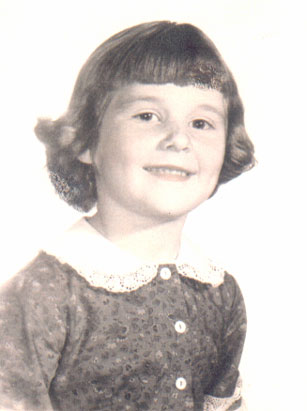
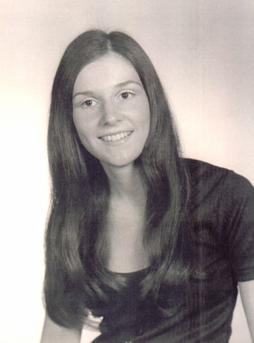
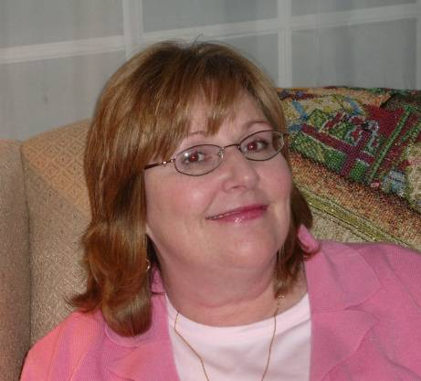

| Cynthia Marie Craig was born in Albany, NY on the 20th of February, 1954. She was the second child and only daughter of Bob and Ginny Craig. |

|
|

|
Cindy went to Mount Saint Mary's College before transfering to the University of Maryland from which she graduated in 197? with a BS in psychology. After that she went to Marymount College to get her associate's degree in Nursing. |
| Cindy married Bob King on May 10th, 1980 in Rockville, MD. Bob had a daughter, Lara, from a previous marriage. Together, Bob and Cindy had three kids: Bobby, Christie, and Michael. Cindy went back to get her BS in Nursing from Notre Dame of Baltimore, graduating in 2000. Today she works as a Nurse. |

|